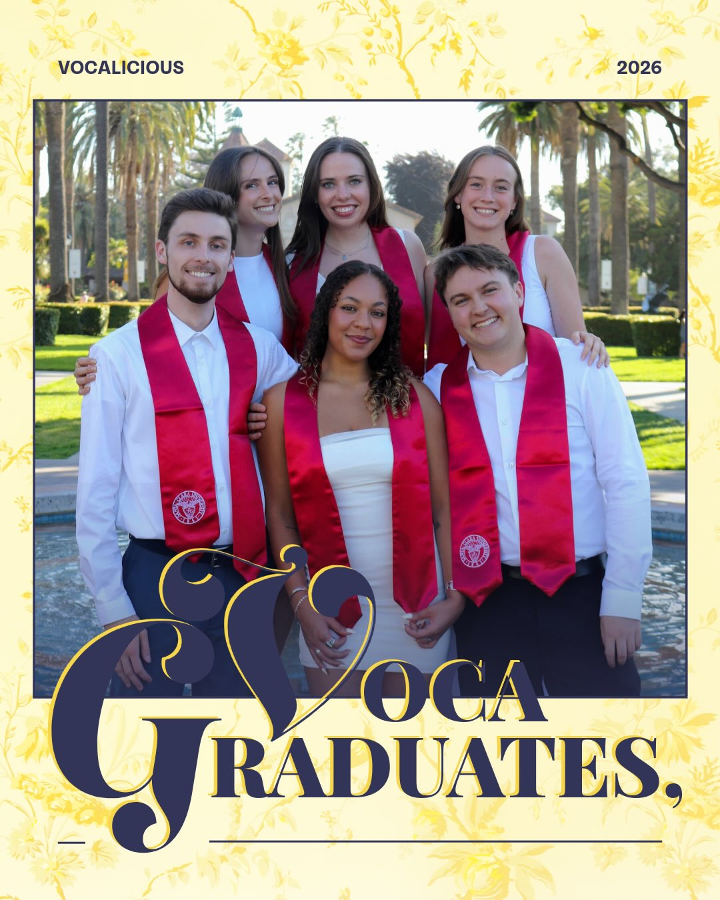
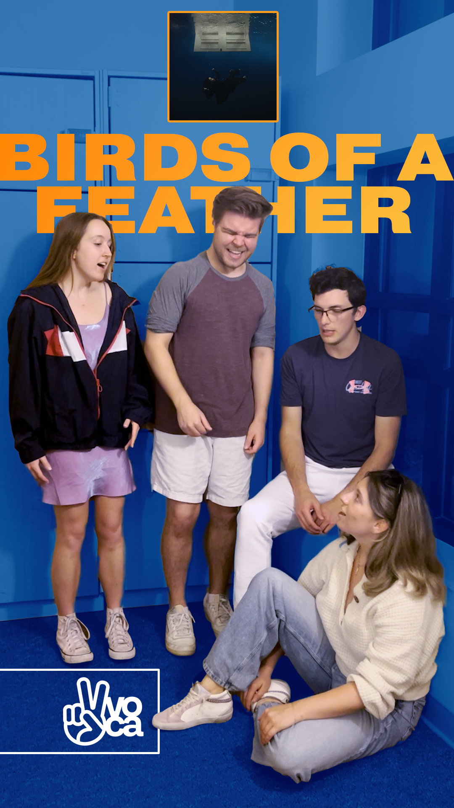
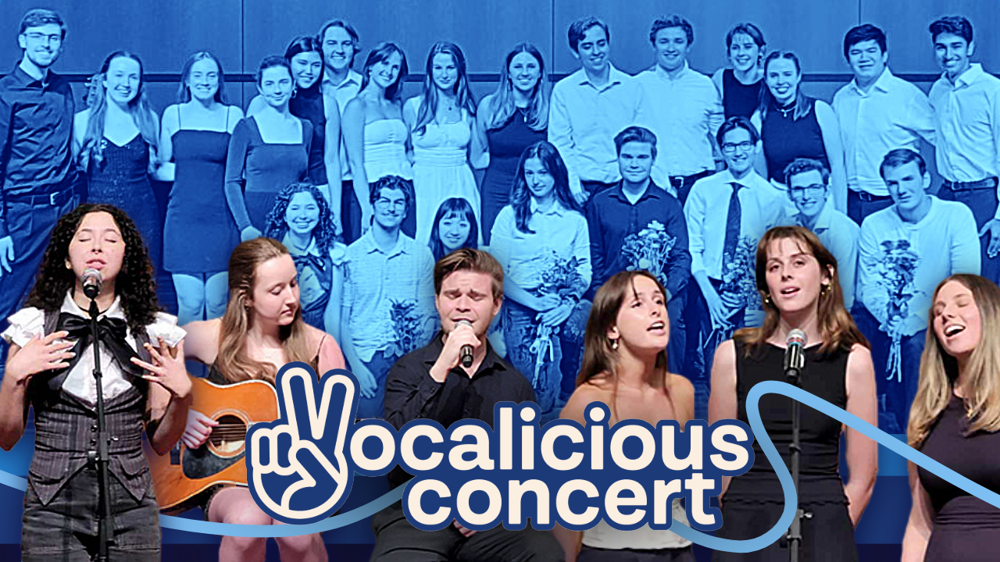
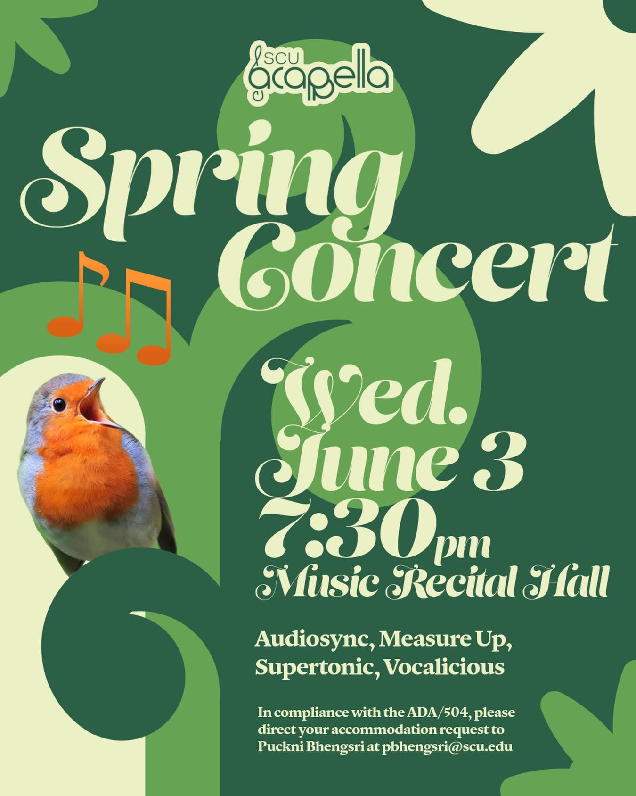
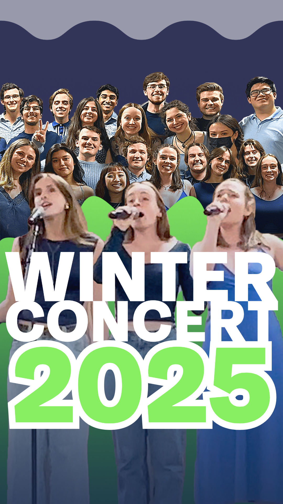

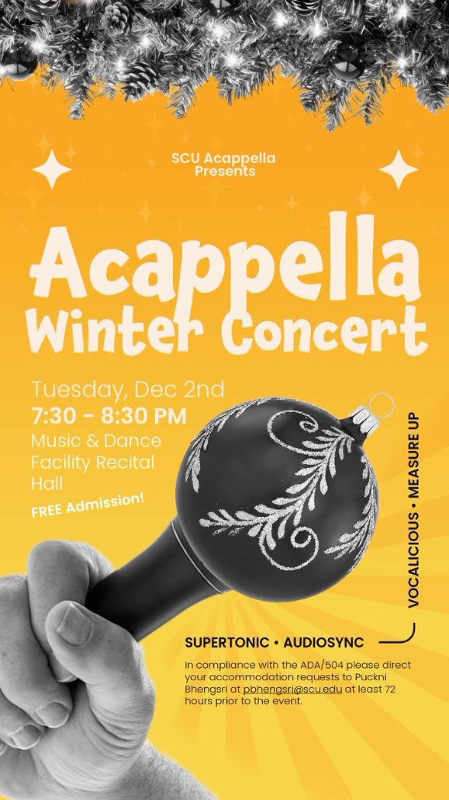
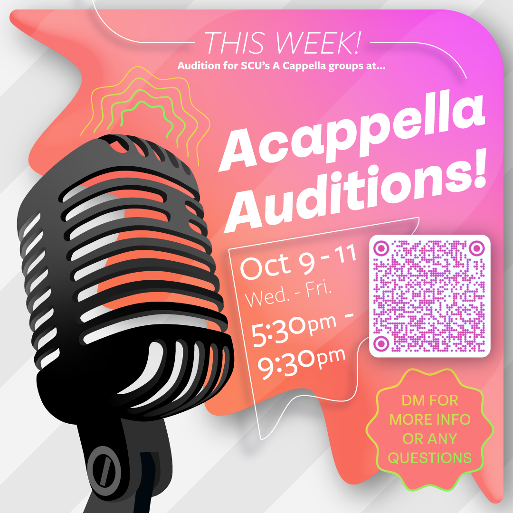
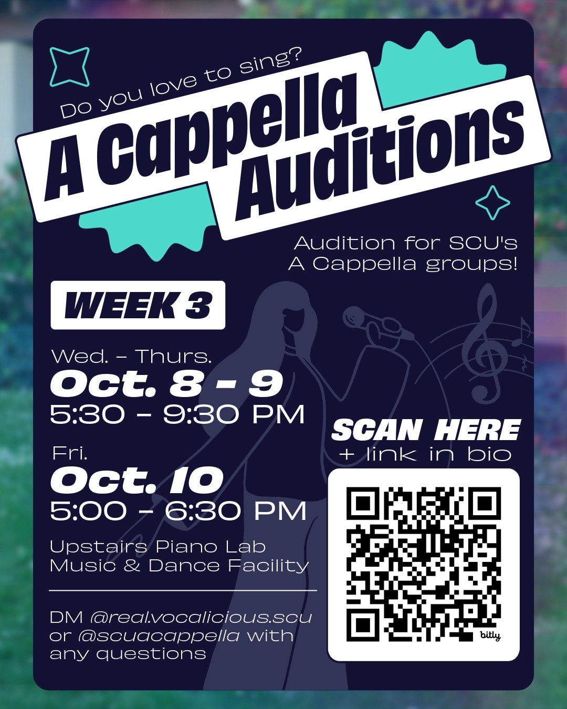
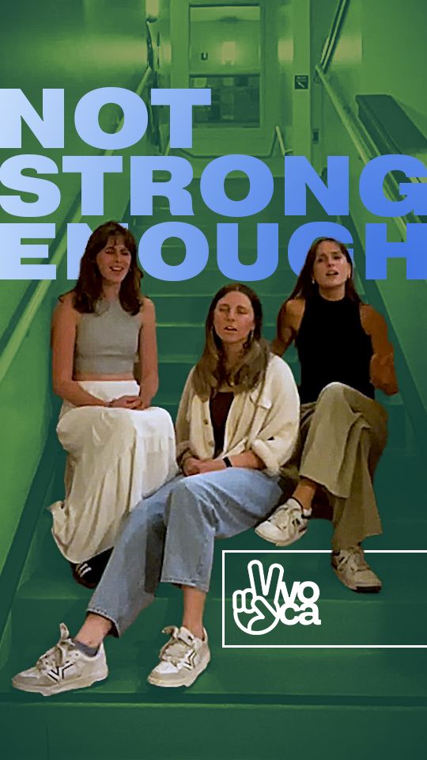
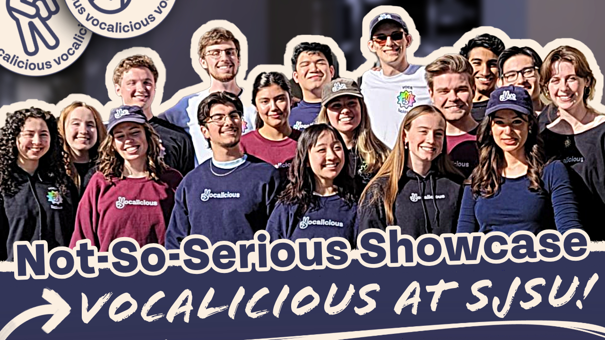
Vocalicious : SCU's Loudest & Proudest A Cappella Group
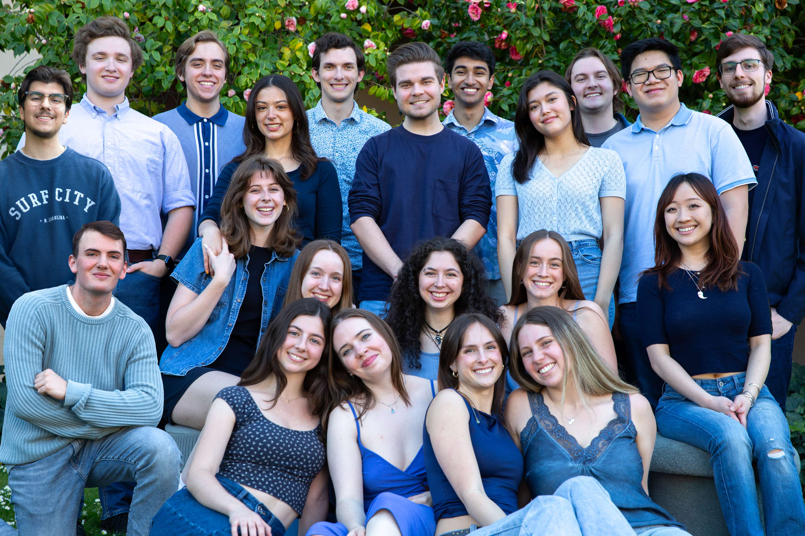
Vocalicious is Santa Clara University's largest all-gender a cappella group since 2018. They are a fully student-run group, under the umbrella organization SCU Acappella, which manages three other groups on campus: Supertonic, Audiosync, and Measure Up. Made up of ~20 members and with voice parts ranging from bass to soprano to beatboxing, their style ranges from the indie tunes of Ginger Root to the bossa nova of Laufey, all the way up to pop hits from Justin Timberlake and Christina Perri. They are also the first acappella group from SCU to go to ICCA, the International Championship of Collegiate A Cappella. Vocalicious competed alongside many talented collegiate a cappella groups in the West region quarterfinals with their first fully choreographed 3-song set.
As a team who loves to share their music with the community, Vocalicious group members participate in weekly rehearsals in preparation for live SCU Acappella performances at the end of each quarter. They also perform at many smaller events throughout the year. During their self-hosted Vocalicious Concert at the end of each school year, they sing in individual, sectional, and full-range groups to show off the diversity of talent and breadth of repertoire they have acquired over the year. The group also loves singing with other collegiate ensembles, and are available for cross-college collaboration throughout the school year! Aside from professional growth and amazing music, being a member of Vocalicious means you'll find yourself in a tight-knit family of talented, musically-oriented students across many different disciplines of study and unique backgrounds.
As a part of Vocalicious from freshman to senior year, I sang as a bass (2022-2026) for four years, and acted as the group's Publicity Chair (previously titled "Social Media Manager") for three. (2023-2026)
As Publicity Chair, I executed Vocalicious' cross-platform social marketing campaign to increase media presence and brand visibility through effective media networking.
I redesigned their brand logo & iterated upon their brand identity to enable longevity and greater recognizability. I also created a style guide and internal presentations for future members. Finally, I directed, edited, and published the group's TikTok, Instagram, and Youtube video content.










Furthermore, I created pamphlets and designed all marketing material for two Vocalicious Concerts, and took charge of livestreaming end-of-quarter a cappella events.
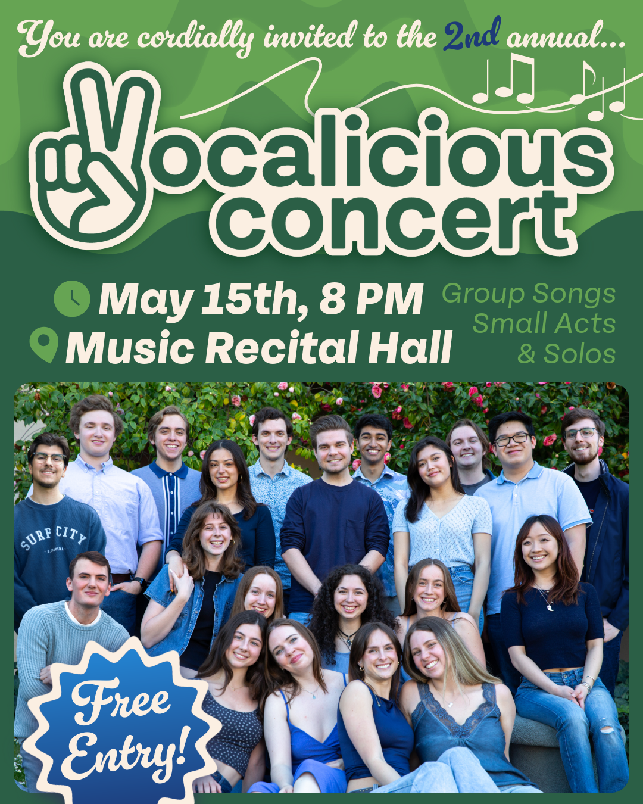
Lastly, I created merchandise two years in a row for the team, evolved the brand's image each year with new designs, and managed, ordered, and distributed over 65 pieces of merchandise for Vocalicious members and supporters, including hoodies, sweatshirts, t-shirts, hats stickers, and tote bags.
This brand expansion helped the group feel more connected and confident, made it easier for others to learn about the group, and increased visibility to non-musical / non-acappella audiences.
As of July 2025, the official Vocalicious website has launched! Developed using HTML, Tailwind, and JS from June 25 - July 3rd. Prototype images can be found in my SCU ARTS Classwork.


.png)
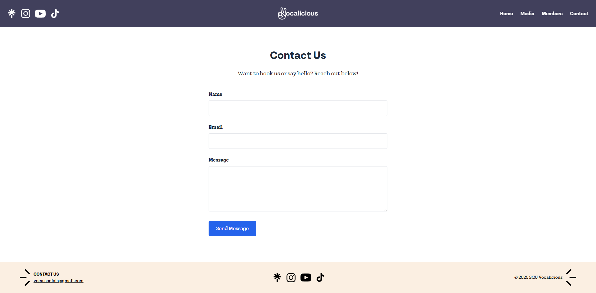